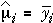

Fitting the models
The categorical model and numerical linear and quadratic models all involve unknown parameters that must be estimated. In other words, we must use the flexibility of the chosen model to get the model's mean responses 'as close as possible' to the observed data.
The difference between any observed response, yij, and the value predicted by the model being used, fitij , is called the observation's residual,
eij = yij − fitij
For all normal models, the parameters are chosen to minimise the sum of the squared residuals,
minimise eij 2
This method of fitting models is called the method of least squares.
There are fairly simple formulae for the least squares estimates of the parameters in most normal models for experimental data.
However statistical software will fit most such models, so the underlying formulae are of little importance.
Cement packing machines
The next diagram shows a model for the cement-packing data. Since the factor (packing machine) is categorical, the mean response can be independently adjusted for each machine.
Drag the red arrows to minimise the residual sum of squares.
SSResid is smallest when
the fitted mean in each group equals the group mean of the data:

Click the button Least squares to set the model slope and intercept to these values.